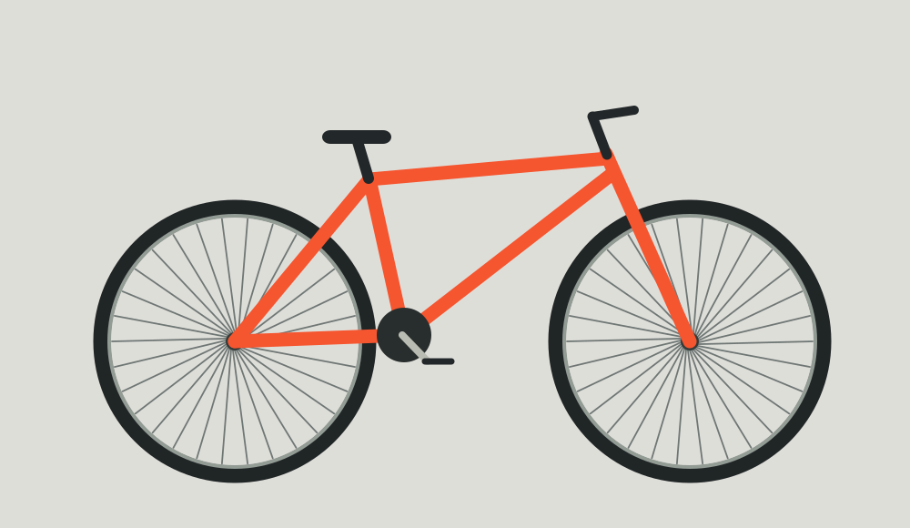
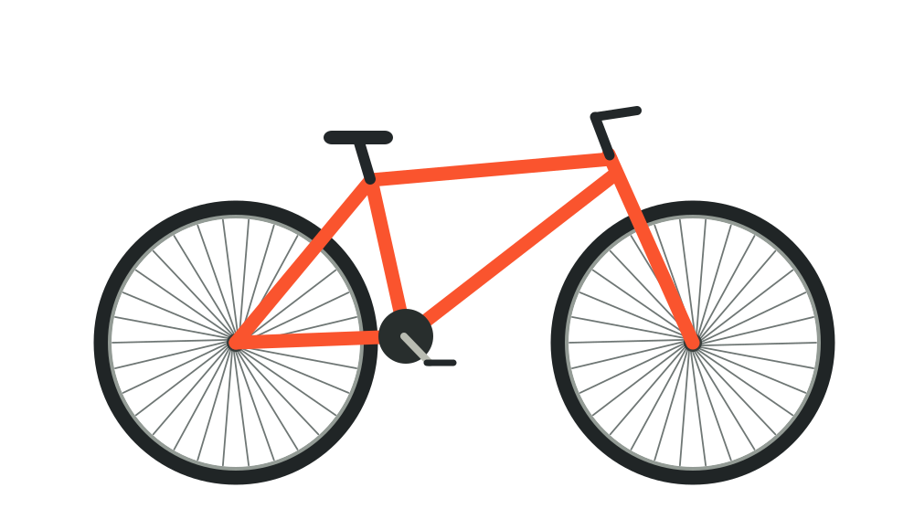

شهری
سیتی ۰۱
فرمان صاف، نشیمن راحت و فریم سبک برای مسیر روزانه.

هندسهی دقیق، قطعات ساده و سه شخصیت متفاوت برای خیابان.

فرمان صاف، نشیمن راحت و فریم سبک برای مسیر روزانه.

فرمانی پایینتر و دندهبندی سریع برای مسافت طولانی.

تایر پهنتر و کنترل بیشتر روی خاک و سنگریزه.
ارتفاع زین، طول فریم و فاصلهی فرمان شخصی میشود.
هر چرخ و کابل پیش از تحویل در کارگاه تنظیم میشود.
مدل و رنگ را انتخاب کن و مسیر کوتاه کارگاه را بران.
چند بررسی کوتاه، دوچرخه را برای رفتوآمد روزانه آماده میکند.
محدودهی فشار روی دیوارهی تایر را بخوان و هر دو چرخ را پیش از سواری بررسی کن.
در حرکت آهسته، هر ترمز را جداگانه امتحان کن.
پس از باران زنجیر را خشک کن و روغن اضافی را با دستمال پاک کن.
قد، طول پا و مدل سواریات را وارد کن تا در جلسهی تنظیم بررسی شود.
فرم پایین صفحه را تکمیل کن. یک فایل متنی از انتخاب و توضیحاتت دریافت میکنی.
این قالب نمایشی است. با تکمیل فرم، خلاصهی درخواستت را به صورت فایل متنی دریافت میکنی.
 انتخاب این قالب
انتخاب این قالب